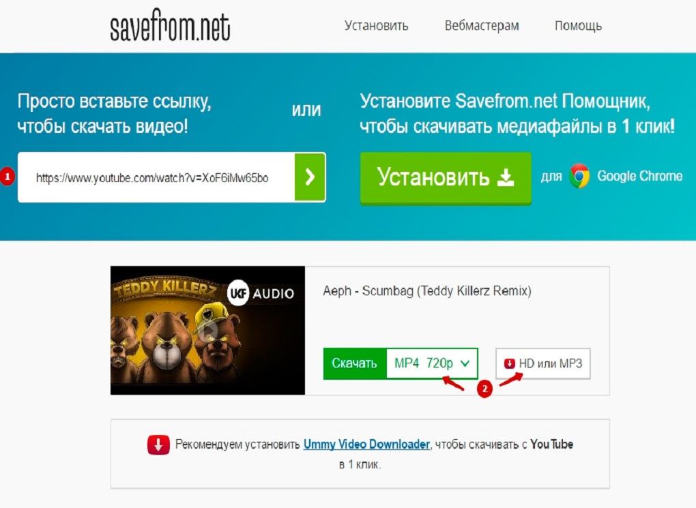

6 SaveFrom
SaveFrom.net – уникальное расширение, позволяющее без лишних сложностей скачивать файлы разного типа из социальных платформ и других Интернет-сайтов. Данный инструмент скачивается в течение нескольких секунд и просто интегрируется в браузер. В дальнейшем пользователь получает возможность в кратчайшие сроки скачивать любые данные. На сегодняшний день разработаны утилиты, предназначенные для всех популярных версий ОС Windows. Разработчики предусмотрели использование программы во всех популярных браузерах (Chrome, Yandex, Opera, Mozilla и другие). Версии утилиты регулярно обновляются, поэтому она соответствует последним требованиям Интернет-сообщества. На данный момент расширение используют клиенты сайтов YouTube, OK, Facebook, ВКонтакте и ряда других сервисов.
Прежде чем узнать о том, как установить или удалить помощник SaveFrom.net с компьютера, нужно изучить саму программу, а также для чего она предназначена. Итак, что же позволяет делать указанная чудо-утилита? Почему вокруг неё столько восторженных отзывов? Сейчас мы с вами с этим разберёмся.
Помощник SaveFrom.net предназначен для облегчения процесса скачивания и загрузки пользователем файлов с различных ресурсов глобальной сети во всемирной паутине. Например, больше половины жителей России сталкивались с такой проблемой, как загрузка песни из социальной сети ВКонтакте. Наверняка вам это тоже знакомо. Или как обстоят дела со скачиванием видео и роликов из онлайн-сервиса YouTube? Вот как раз для решения данного рода задач и нужен такой помощник, как SaveFrom.net. Он позволяет не только загружать песни из ВКонтакте и ролики из YouTube — сервис работает со множеством других ресурсов: Одноклассники, Facebook, Livejournal, Sound.cloud, Vimeo и остальными. Весь список доступных библиотек можно изучить на официальном веб-портале помощника.
Установка помощника
Если вы заинтересовались в установке незаменимого инструмента при работе в интернете, то давайте попробуем сделать это прямо сейчас! Что для этого вам понадобится? Всего лишь несколько минут вашего времени, компьютер или ноутбук с возможностью выхода в глобальную сеть, а также предустановленный браузер из следующего перечня:
1. Google Chrome;
2. Яндекс.Браузер;
3. Mozilla Firefox;
4. Opera;
5. Safari;
6. Chromium.
С другими веб-обозревателями утилита не работает, но согласитесь, что список поддерживаемых продуктов и так вполне впечатляет. Теперь, собственно, сама процедура установки:
1. Необходимо зайти на официальный сайт продукта SaveFrom.net и скачать установщик на свой компьютер. http://ru.savefrom.net/user.php?vid=389#download;
2. Яндекс.Браузер;
3. Mozilla Firefox;
4. Opera;
5. Safari;
6. Chromium.
2. Затем обязательно закрыть браузер, в который позже будет устанавливаться расширение помощника;
3. Можно открыть установщик, загруженный на первом шаге. Внимательно читайте инструкцию, следуя которой вы легко установите утилиту на компьютер;
4. Дождитесь завершения процесса инсталляции, после которого, возможно, потребуется перезапуск вашего браузера. Теперь вы можете спокойно пользоваться услугами расширения.
3.1.1 Функционал программы
Основные характеристики данного сервиса следующие:
— возможность скачивать с помощью установленного расширения или с помощью интернет-ресурса savefrom.net;
— возможность быстрого и простого скачивания видео и звуковых файлов непосредственно со страницы Интернет-ресурсов;
— рабочие опции выведены на панель инструментов, что ускоряет работу клиента;
— при наличии большого количества ссылок на странице предлагается перечень доступных скачиваний;
— возможность самостоятельно определять желаемое качество видео и получить его в оптимальном расширении;
— сотрудничество с наиболее популярными веб-ресурсами;
— присутствует опция загрузки всего плейлиста;
— оптимальная скорость скачивания роликов в сетях Facebook и ВК непосредственно со страниц друзей или с новостной ленты;
— интеграция необходимых плагинов в единую программу, что упрощает работу с разными файлообмениками;
— возможность встраивания утилиты в интерфейс собственного сайта, чтобы предлагать посетителям прямые ссылки для скачивания;
— возможность скачать с ютуба за пару кликов.
Данный сервис поддерживает следующие интернет-ресурсы:
Как пользоваться SaveFrom.net
Если с установкой всё прошло гладко, то пришло время поговорить и о том, как пользоваться SaveFrom.net. На самом деле ничего сложного нет: никаких особенных знаний вам для этого не потребуется. Существует несколько способов эксплуатации программы:
1. Сервисом можно пользоваться даже без установки расширения для веб-обозревателя. Да, это действительно так: достаточно просто ввести перед адресом страницы, с которой вы хотите скачать материал, следующее — ss. Например, для скачивания клипа Леди Гаги https://www.youtube.com/watch?v=Xn599R0ZBwg в строке адреса нужно будет написать https://www.sscom/watch?v=Xn599R0ZBwg. Таким образом, вы перейдёте на страницу помощника, где утилита предложит вам варианты загрузки.
2. Второй способ — на официальном веб-портале SaveFrom.net вставьте ссылку на песню или видео с какого-нибудь сервиса и кликните по клавише Enter на вашей клавиатуре. Аналогично предыдущему варианту, программа предложит вам варианты загрузки.

3. Третий вариант — утилизация расширения для браузера, пример установки которого мы рассмотрели выше. Тогда на самих сайтах, которые поддерживаются сервисом, появятся кнопки для быстрого скачивания необходимых файлов.
3.1.2 Достоинства и Недостатки Video DownloadHelper
Достоинства: доступен на русском языке, позволяет скаивать аудио и видео, доступен в виде приложения и в виде интернет-ресурса, позволяет скачивать видео без лишних действий, имеет доступ к большому количеству ресурсов.
Недостатки: не позволяет выбирать папку для скачивания видео
Рейтинг составлен на основе анализа и наблюдений, однако пользователь в праве отталкиваться от субъективных ощущений от программ и средств и выбирать программу, которая показалась ему наиболее удобной и полнофункционалной.
Программы и средства скачивания видео
с Youtube и других сайтов Интернет
- All
- aTube Catcher
- YouTube Downloader HD
- Clipgrab
- Video DownloadHelper
- SaveFrom
- Ummy Video Downloader
- MassTube
aTube Catcher
для ПК с ОС Windows является главным образом загрузчиком YouTube , но он также работает для других популярных видеосайтов.
aTube Catcher
См.продолжение
YouTube Downloader HD
простая бесплатная программа для скачивания видеофайлов с популярного хостинга видео YouTube.
YouTube Downloader HD
См.продолжение
Clipgrab
Это приложение позволяет конвертировать загруженные видео.
Clipgrab
См.продолжение
DownloadHelper
его задача - это загрузка видео и аудио файлов с сайтов. Данный плагин можно использовать практически для всех сайтов, что и делает его ценным.
Video DownloadHelper
См.продолжение
SaveFrom
это сервис, позволяющий скачивать мультимедийный контент с сайтов типа vk.com и youtube.com существуют также дополнения для браузеров для упрощения процесса.
SaveFrom
См.продолжение
Ummy Video Downloader
это программа для скачивания любого видео с YouTube.
Ummy Video Downloader
См.продолжение
Иные способы скачивания видео
Иные способы скачивания видео
См.продолжениеСписок использованных источников
1. Программы для скачивания видео с любого сайта [Электронный ресурс] // Mydiv. – Режим доступа: URL: https://soft.mydiv.net/win/collections/show-Programmy-dlya-skachivaniya-video-s-lyubogo-sayta.html (дата обращения : 24.05.2020).
2. Программы для скачивания видео с любого сайта [Электронный ресурс] // VideoProgs. – Режим доступа: URL: https://videoprogs.com/ru/programmy-dlya-skachivaniya-video-s-lyubogo-sayta (дата обращения : 24.05.2020).
3. aTube Catcher для YouTube: Mp3, MP4, HD c YouTube [Электронный ресурс] // aTube Catcher. – Режим доступа: URL:http://forum.ru-board.com/topic.cgi?forum=5&topic=48308 (дата обращения : 24.05.2020).
4. Функционал aTube Catcher [Электронный ресурс] // aTube Catcher. – Режим доступа: URL:https://biblsoft.ru/windows/internet/downloaders/331-atube-catcher (дата обращения : 24.05.2020).
5. Youtube Downloader HD [Электронный ресурс] // Youtube Downloader HD. – Режим доступа: URL:http://zuxcel.com/youtube-downloader-hd/ (дата обращения : 24.05.2020).
6. Ummy Video Downloader для YouTube: Mp3, MP4, HD c YouTube [Электронный ресурс] // Ummy Video Downloader. – Режим доступа: URL: https://videodownloader.ummy.net/ru/ (дата обращения : 11.05.2020).
7. ClipGrab — программа для скачивания видео из интернета [Электронный ресурс] // ClipGrab. – Режим доступа: URL: https://komp.vellisa.ru/clipgrab (дата обращения : 11.05.2020).
8. Video DownloadHelper – для чего используется и как установить плагин [Электронный ресурс] // Video DownloadHelper. – Режим доступа: URL: https://tvoykomputer.ru/video-downloadhelper-dlya-chego-ispolzuetsya-i-kak-ustanovit-plagin/ (дата обращения : 11.05.2020).
9. В Чем Дело SaveFrom.net Вирус: Что Это Такое И Как Его Удалить [Электронный ресурс] // SaveFrom.net. – Режим доступа: URL: https://www.lifewire.com/what-is-the-savefrom-net-virus-4767587 (дата обращения : 11.05.2020).
10. Отзывы о Ummy Video Downloader [Электронный ресурс] // Ummy Video Downloader. – Режим доступа: URL: https://fb.ru/article/384335/otzyivyi-o-ummy-video-downloader-kak-polzovatsya-programmoy (дата обращения : 11.05.2020).
11. Как скачать видео с YouTube [Электронный ресурс] // Иные способы скачивания видео. – Режим доступа: URL: https://yandex.ru/q/question/computers/kak_skachat_video_s_youtube_f71656a5/?utm_source=yandex&utm_medium=wizard&answer_id=d6b2a617-8beb-4696-b9a7-4c30a2fe9e63 (дата обращения : 20.05.2020).
12. 10 универсальных сервисов [Электронный ресурс] // Иные способы скачивания видео. – Режим доступа: URL: https://lifehacker.ru/kak-skachat-video-bez-programm/ (дата обращения : 20.05.2020).
13. Как скачать видео с любого сайта [Электронный ресурс] // Иные способы скачивания видео. – Режим доступа: URL: https://umi.ru/blog/kak-skachat-video-s-lyubogo-sayta/ (дата обращения : 21.05.2020).